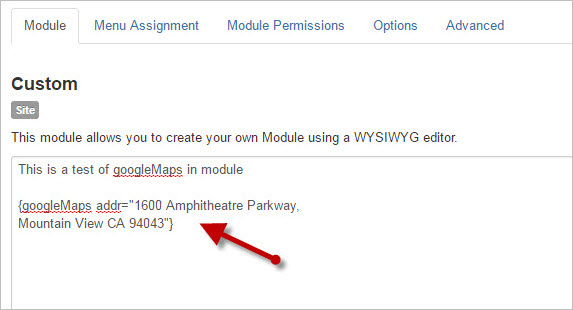
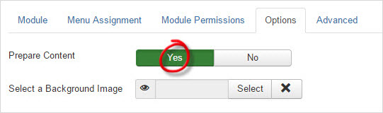

Plugins such as DirectPHP, googleMaps and googleDirections are called content plugins.
As the name suggests, content plugins run inside Joomla articles, or the com_content component.
If you're using Joomla 3 and above, it's now very easy to run content plugins in Custom HTML Modules.
- Create a new Custom HTML Module (or Edit an existing module):
Extensions > Modules > New > Custom HTML - Suppose you're using the googleMaps plugin, enter the code in the text area of the module:
- Go to the 4th tab "Options". Set the 1st field "Prepare Content" to "Yes".
- Click "Save and Close".


Your plugin should now run inside your custom module!
Troubleshooting
Take for example, if you are using the googleMaps plugin and the map does not appear in the module, please try the following:
- First thing first, make sure that the plugin works on your joomla website. All you need to do is to create a new article and place the tag in the article. Save the article and load the article in your joomla. If the google maps appear in the article, it means that the plugin is working.
- Now that your are sure that the content plugin is working fine, place the same tag in a custom HTML module. Go to Module Manager and make sure that the following are set correctly:
- The module is enabled or published.
- You have selected the correct module position.
- In "Menu Assignment", make sure you have selected "On all pages" or "Only on the pages selected"
- In "Options", you have changed "Prepare Content" to "Yes" as described in the previous section.
- Don't forget to save.
- If the map still does not appear, then you may want to try clearing the cache.
- You need to clear the cache for on your Joomla server side (especially if you are using some cache plugins).
- You also need to clear your browser cache and do a reload.
Note that plugins such as DirectPHP, googleMaps and googleDirections are all content plugins.. As the name suggests, they are originally designed to work within a content article. If the plugin does not work in a content article, it WILL NOT work in a module. So always test your tag in a content article first.
Comments
I'm using it in a Custom HTML Module.
Thank you very much!
I can't get the maps to display in my latest J! installation. I am using {googleMaps lat=-33.855672 long=151.172872 label="Nicolsons Electrolysis" label=”Nicolsons Electrolysis” width=180 height=200 addscale=1 addoverview=0 add_p=1} but the map does not display in the module. I;ve tried deleting my browser cache. Any suggestions?
Thanks in advance.
Just tried your code on my test website. It's working fine.
Please refer to the troubleshooting guide here: https://www.kksou.com/php-gtk2/joomla/how-to-run-joomla-content-plugins-in-custom-html-modules.php#troubleshooting
Please give the above a try and let me know if it works.
Warm Regards,
/kksou
Thank you for your expedient reply.
I did try searching for a solution before posting and eventually found that I needed to add additional code between the head tags of my template index file to address a https/ssl issue arising from the google maps javascript api calling a http rather than https request.
As usual, this occurs a short time after I post for help on a forum :|
Once again, thank you and best regards and success with your app
Glad you've got it to work!
Quote:Think you may be using the older version.
You may want to install the latest version of googleMaps (v3.0.30) which will give support for https/ssl site.
The latest version also adds support for the Joomla Update System. What this means is that once you have installed this version, Joomla will inform you whenever there is a new version of googleMaps. You can simply update the plugin from within the Joomla backend at the click of a button.
Warm Regards,
/kksou
How do I tell?
Thanks in advance.
1. Logon to Joomla backend
2. Select Extensions - Manage (from top menu)
3. On the Left Menu, click "Manage"
4. Search for googleMaps. You will see the version number listed there.
Please give the above a try and let me know if it works.
Warm Regards,
/kksou
I updated the plugin and now the map has vanished again. I tried removing the script in the head of the template but that did not fix the issue. Any suggestions?
Thank you in advance.
Kaz
My server just made a liar of me. It is now working.
Thank you for your patience with me.
I just installed your DirectPHP plugin but I am not sure how can it help me to achieve the following objective: I need to create a custom HTML module on Joomla website mywebsite.com that will display another Joomla module from myotherwebsite.com.
Both websites are on the same server, even though I don't think this makes it easier or not.
So, I thought I could use DirectPHP plugin in order to write some PHP on a custom HTML module with an inclue or required command but I am not sure how to do this.
Any suggestions?
Tks a lot!
Guilherme
I wrote DirectPHP as a simple way for me to insert simple PHP codes into Joomla article.
What you want is a lot more complicated than what DirectPHP is designed to do. It can be done if you are very familiar with both PHP and Joomla. But if you're not, I would suggest not to, because it involves accessing another website, and maybe the mysql of another website. If not done carefully, and you did not switch back to the mysql of your original Joomla website, you will see only one blank screen. Yes, only one blank screen with no warning or error messages at all.
If you can code this using DirectPHP, it means you know PHP and Joomla very well. In that case, I would suggest you write your code directly as a Joomla module or plugin. It's so much cleaner and easier, especially for debugging purpose.
Warm Regards,
/kksou
I have another question regarding DirectPHP plugin block feature: if I block all PHP commands excep the ones I do use inside content or custom HTMLs modules (if this is possible), will the plugin block ALL PHP or just PHP existing in my content articles and/or HTML modules?Tks a lot!
Guilherme
It only blocks the one that you use inside DirectPHP.
Warm Regards,
/kksou
RSS feed for comments to this post